|
| 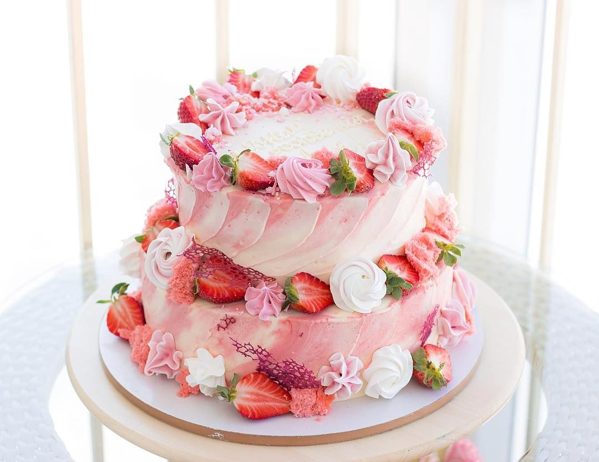
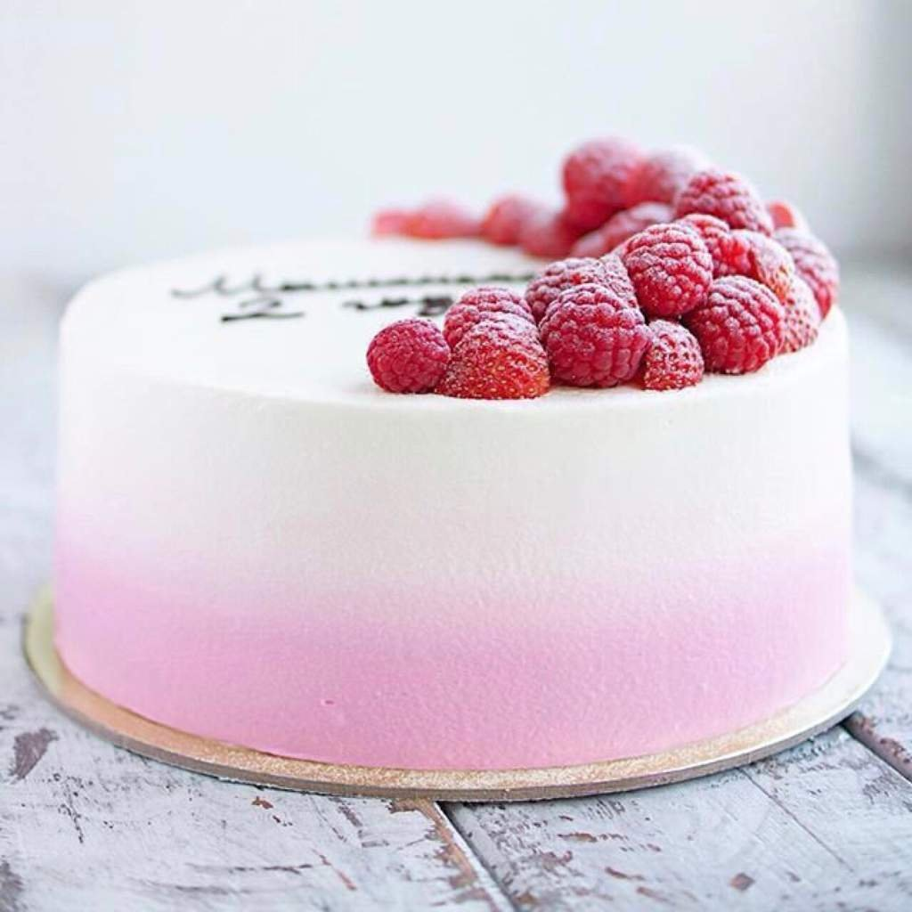
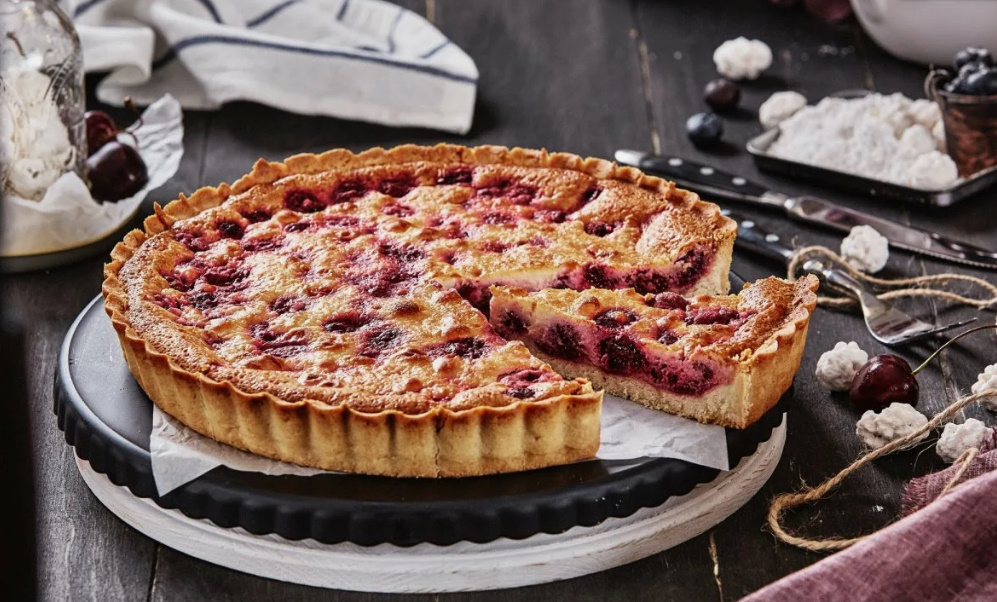
Торт с ярусами Торт с кремом Домашний пирог
Торты с ярусами – это настоящее произведение искусства в мире кондитерского дела. Каждый ярус торта украшен уникальными декоративными элементами, создающими впечатление изысканности. Великолепное сочетание различных текстур и вкусов делает эти торты настоящим удовольствием для всех чувств.
Торты с кремом – это классика десертов, которая никогда не выходит из моды. Нежные кремы различной текстуры и вкуса идеально сочетаются с воздушными коржами, создавая неповторимый вкус и аромат. Такие торты являются отличным выбором для любого торжества и станут настоящим украшением праздничного стола.
Домашние пироги – это идеальный выбор для тех, кто ценит традиционные рецепты и уют атмосферы домашнего тепла. Сочные начинки, хрустящие коржи и неповторимый вкус сделают домашний пирог незабываемым угощением для всей семьи. Такие пироги напоминают о далеких детских воспоминаниях и создают атмосферу уюта и радости.
|
| 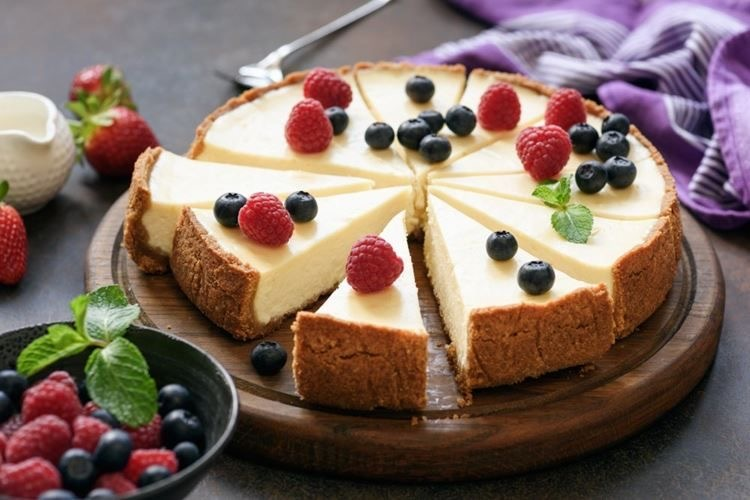
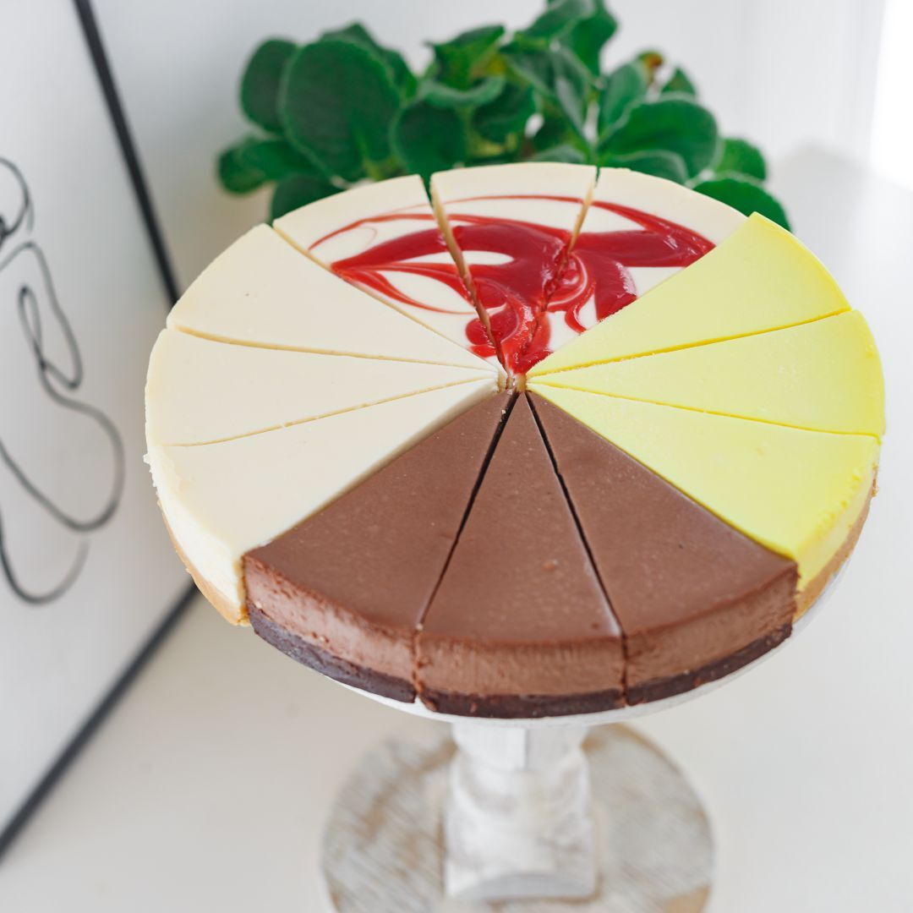
Классический чизкейк Чизкейки с различными вкусами Чизкейк - это американский десерт, который завоевал популярность по всему миру благодаря своему неповторимому вкусу и нежной текстуре. Основой чизкейка обычно служит крошка из печенья или граммацекеров, смешанная с маслом для добавления хрустящей текстуры. Начинка состоит из кремчиза (cream cheese), яиц, сахара и ванили, которые смешиваются в кремовую массу. Для придания аромата могут быть добавлены фрукты, ягоды или шоколад. После выпекания в духовке чизкейк остывает и застывает, создавая идеальную гармонию вкусов. Чизкейк подается обычно с муссом, карамелью или свежими фруктами, что придает десерту особенное очарование. Невозможно устоять перед его изысканным вкусом и нежной текстурой, который делает чизкейк незабываемым угощением для любого времени года и любого повода.
|
| 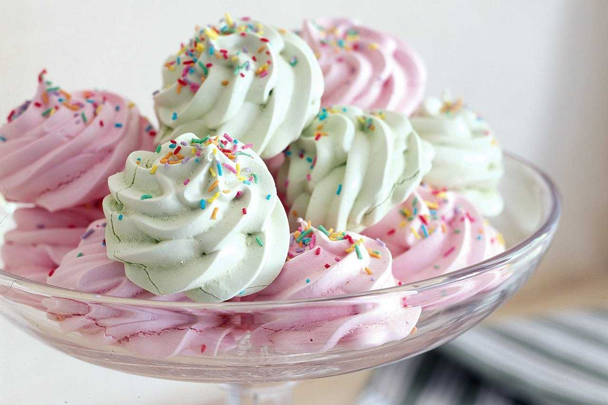
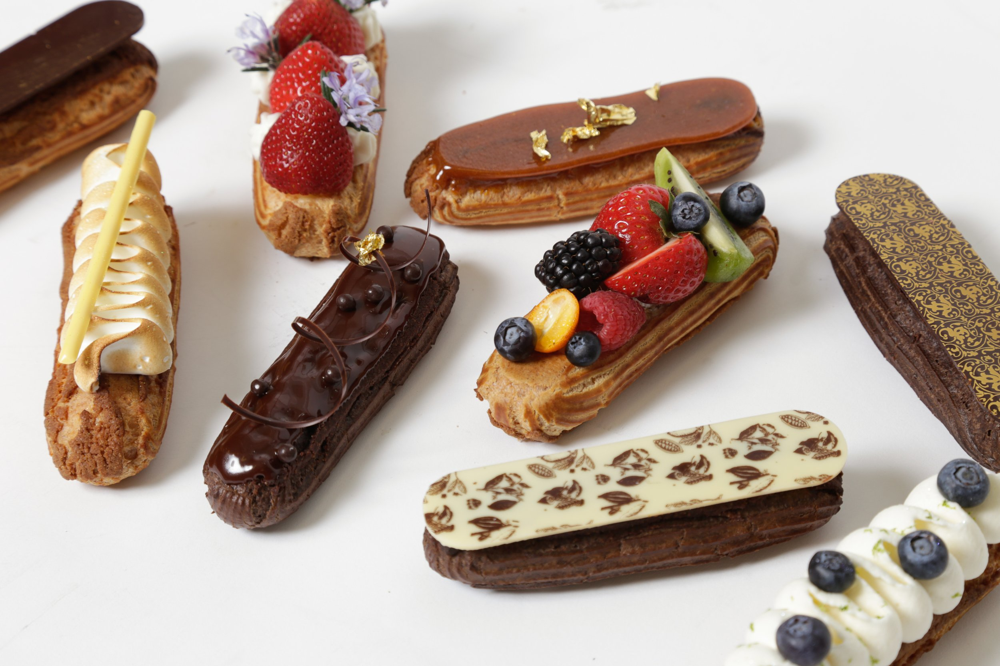
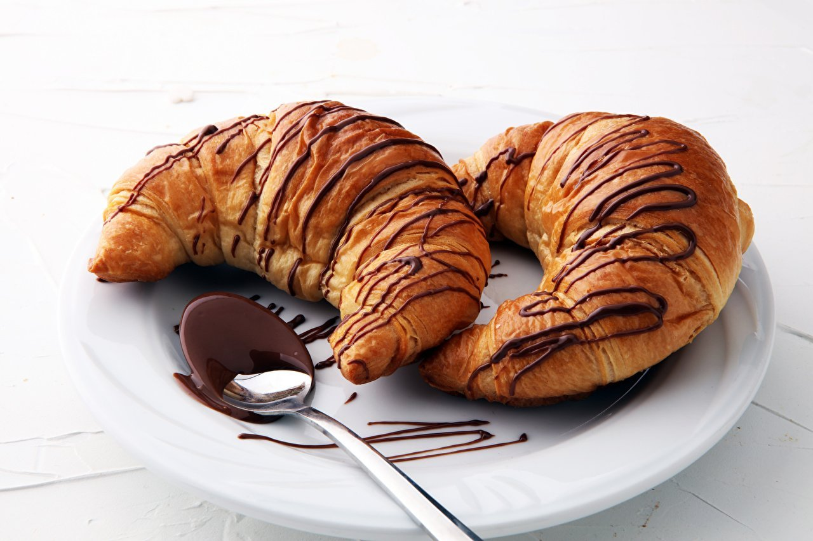
Безе Эклеры Круассаны Безе, эклеры и круассаны – это изысканные десерты, которые завоевали сердца гурманов по всему миру.
Безе – это легкие воздушные пирожные, приготовленные из взбитых белков с добавлением сахара. Они нежные на вкус, хрустящие снаружи и невероятно ароматные.
Эклеры – это французские заварные пирожные, начиненные кремом или глазурью. Они имеют изящную форму и неповторимый вкус, который заставляет возвращаться к ним снова и снова.
Круассаны – это тонкие слоеные булочки, приготовленные из слоистого теста с маслом. Они неповторимо хрустят при каждом укусе, раскрывая свой нежный вкус и аромат. Каждый из этих десертов – настоящее произведение искусства, способное порадовать даже самого взыскательного гурмана.
|
| 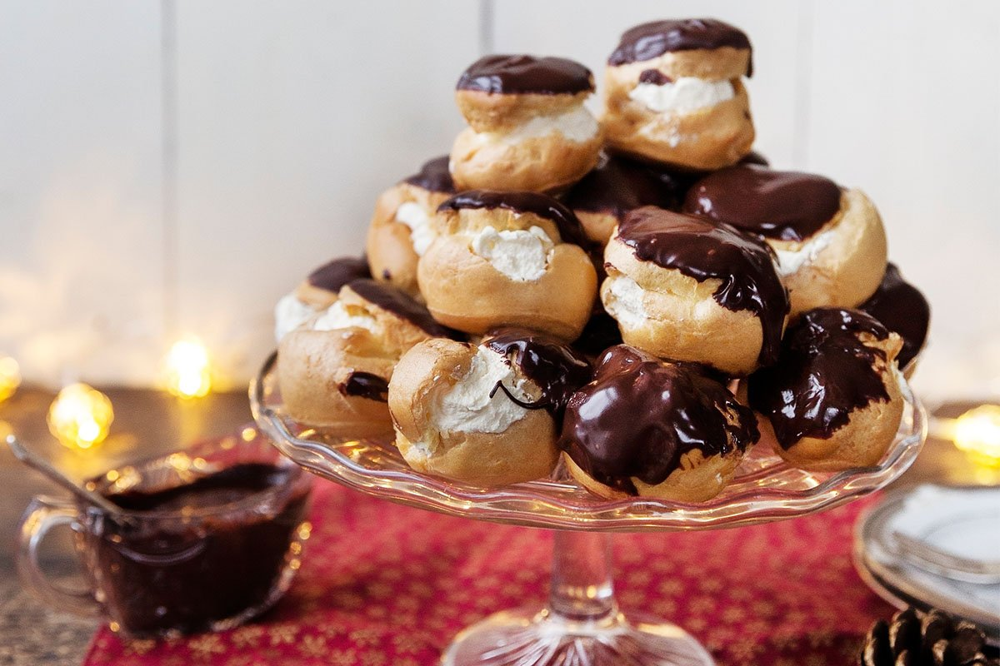
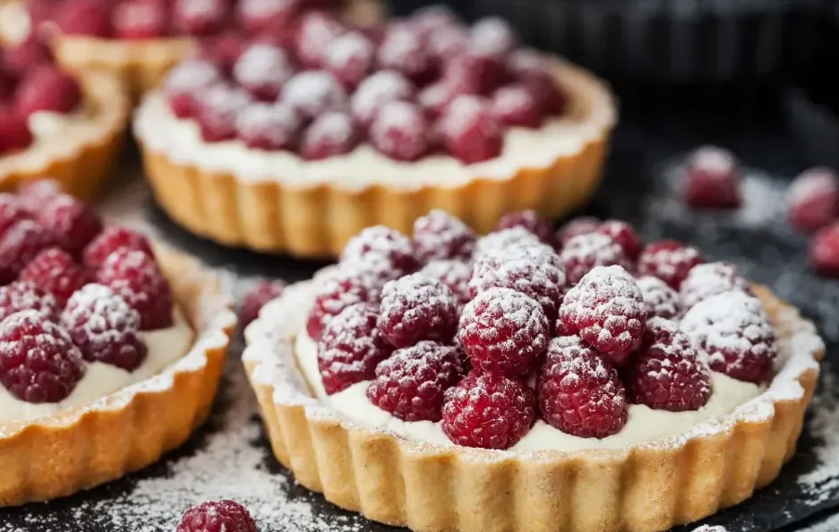
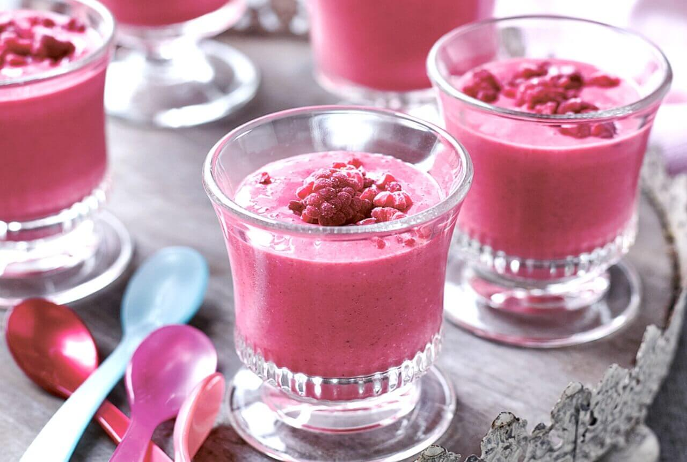
Профитроли Корзиночки Мусс Профитроли - это воздушные и нежные пирожные, состоящие из эклерного теста, наполненного вкусным кремом или муссом. Идеальное сочетание хрустящей корочки и нежного начинки делает их незабываемо вкусными и популярными десертами.
Корзиночки с кремом - это небольшие слоеные пирожные в форме корзинки, наполненные нежным кремом и украшенные фруктами или ягодами. Этот десерт отлично сочетает в себе карамельную хрустящую корочку и нежный крем, создавая идеальный баланс вкусов и текстур.
Муссы - это легкие и воздушные десерты, состоящие из взбитых сливок или яиц с добавлением фруктового пюре или шоколада. Насыщенный вкус и невесомая текстура делают муссы отличным выбором для завершения праздничного ужина или просто для утоления сладкого голода. Умело сочетая все эти десерты в одном меню, можно создать настоящий праздник для ваших вкусовых рецепторов и порадовать себя и близких вкусными лакомствами.
|
| 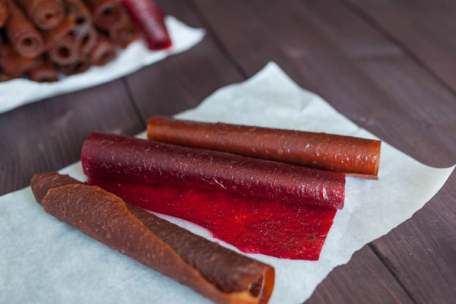
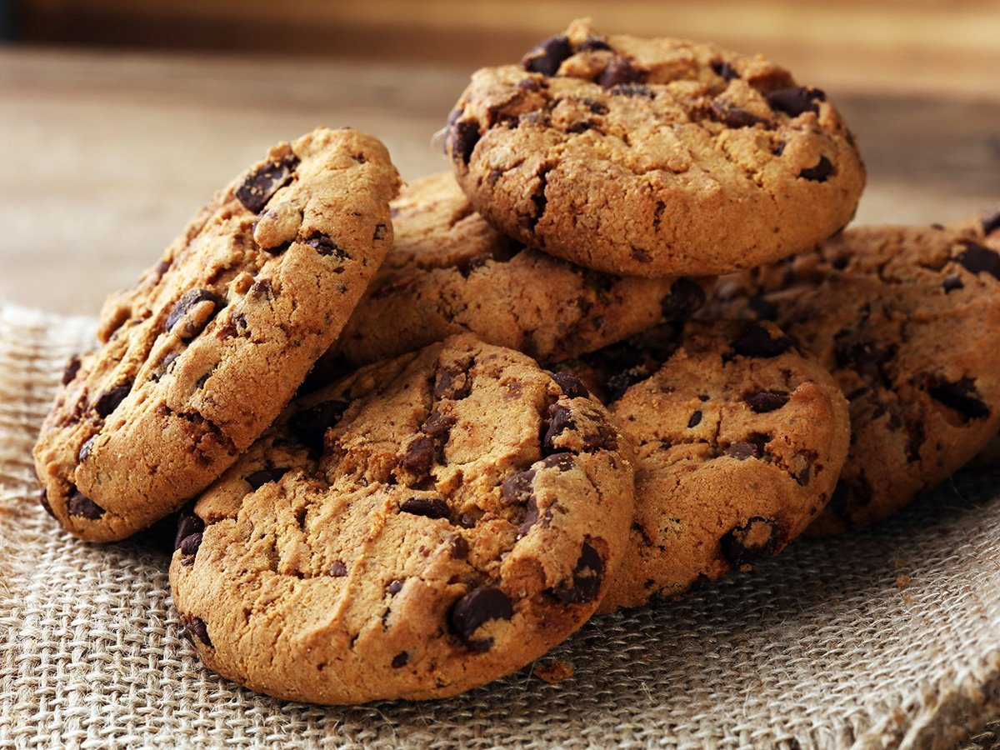
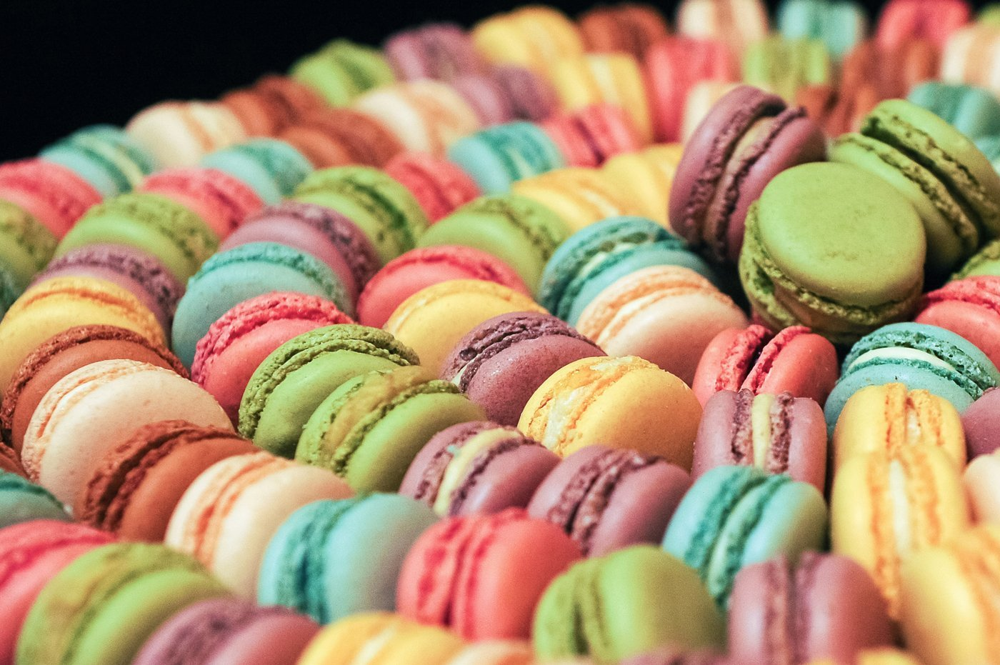
Пастила Печенье Макаронсы Пастила - это тонкий слой фруктовой или ягодной массы, высушенный до состояния легкой и пушистой сладости. Ее нежный вкус и нежная текстура делают ее отличным угощением к чаю или кофе.
Печенье - это хрустящие и ароматные сладости, которые приготовлены из муки, сахара и масла. Они могут быть различной формы и вкуса, от классического шоколадного до пряного имбирного. Печенье часто украшают глазурью или орехами, делая его еще более аппетитным.
Макаруны - это изысканные французские сладости, состоящие из двух бисквитных коржей, соединенных кремом или джемом. Они отличаются неповторимым вкусом и нежной текстурой, которая тает во рту. Макаруны часто украшают цветной глазурью или конфетными драже, делая их по-настоящему привлекательными.
|
Все эти десерты обладают своим неповторимым шармом и могут стать отличным дополнением к чаепитию или просто сладким угощением на каждый день. Попробуйте все виды сладостей и насладитесь их неповторимым вкусом!